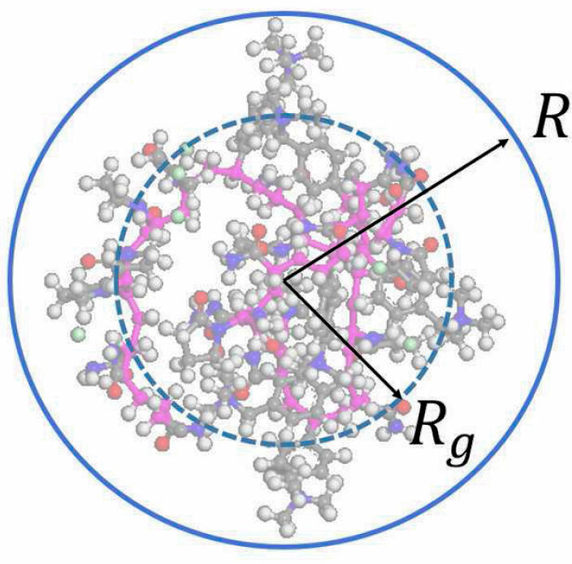
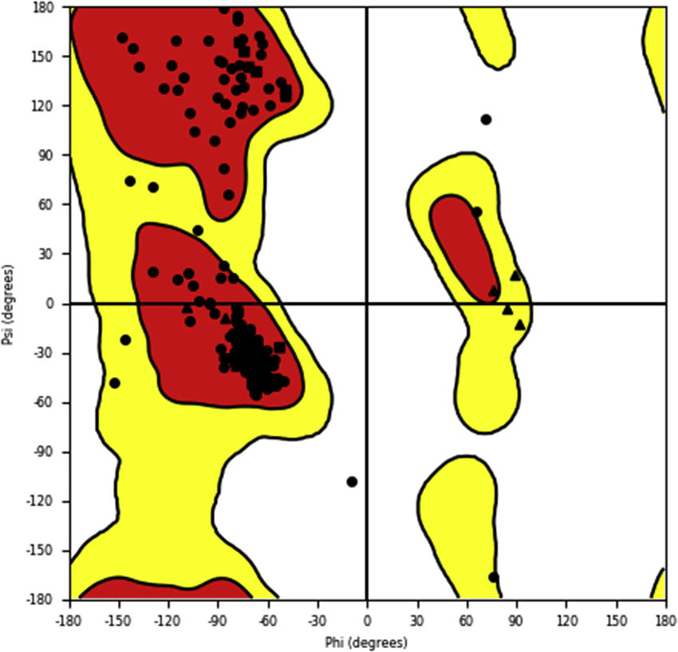
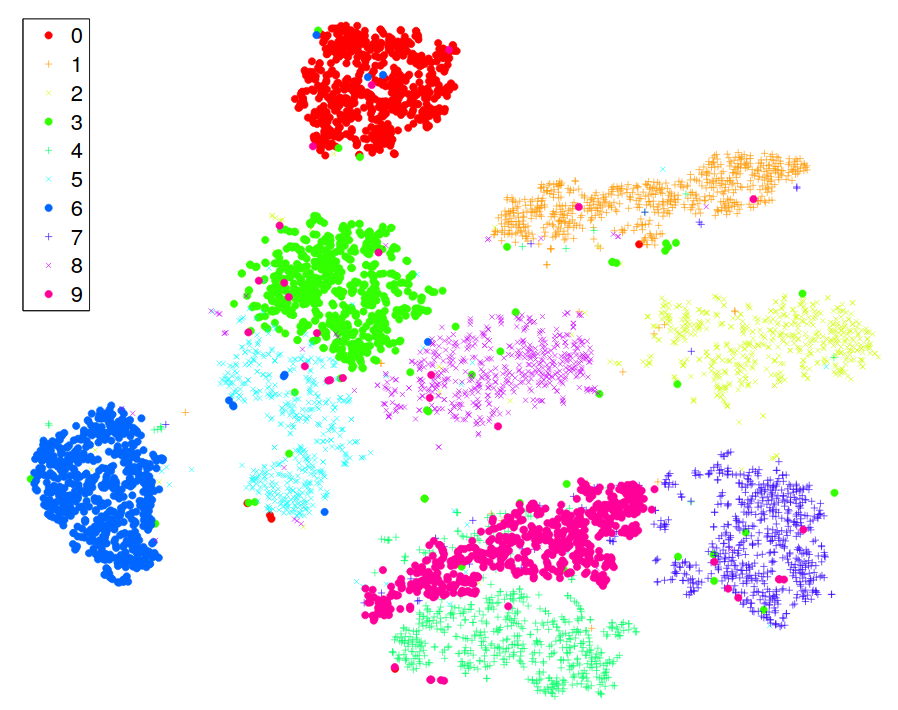
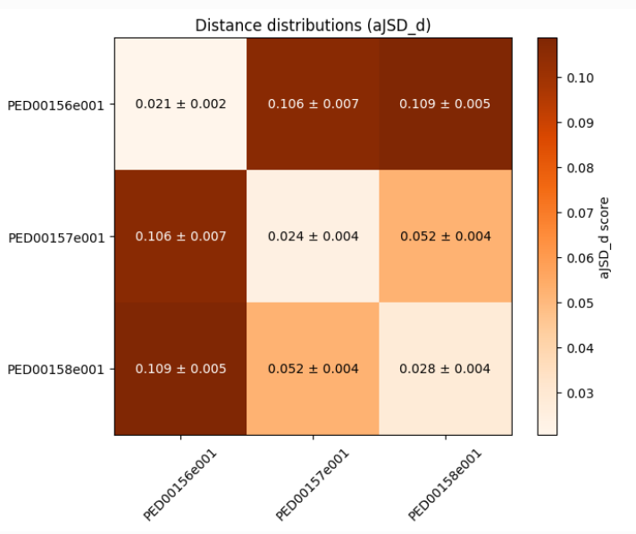

Demo
We designed the IDPET Python package to facilitate the study and analysis of conformational ensembles of intrinsically disordered proteins. These proteins, known for their dynamic and highly variable structures, play a fundamental role in various biological processes.
Here, we highlight four different types of analyses that can be performed using IDPET. For more details you can also check the jupyter notebooks provided in the github repository.
Notebooks Overview
Here’s a summary of the example notebooks available in the github repository:

Global analysis

Local analysis

Dimensionality Reduction analysis

Ensemble Comparison